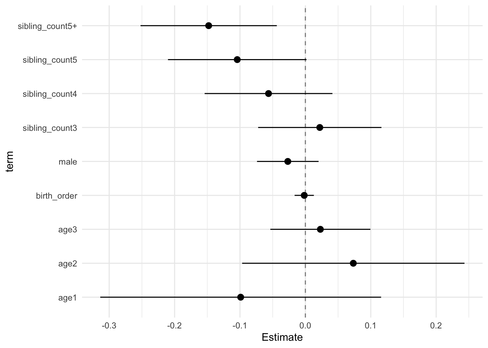

Birth Order Effects
Helper
source("0_helpers.R")## Warning: package 'rmarkdown' was built under R version 3.4.3## Warning: package 'knitr' was built under R version 3.4.3##
## Attaching package: 'formr'## The following object is masked from 'package:rmarkdown':
##
## word_document## Warning: package 'lubridate' was built under R version 3.4.3##
## Attaching package: 'lubridate'## The following object is masked from 'package:base':
##
## date## Warning: package 'stringr' was built under R version 3.4.3## Loading required package: carData## lattice theme set by effectsTheme()
## See ?effectsTheme for details.##
## Attaching package: 'data.table'## The following objects are masked from 'package:lubridate':
##
## hour, isoweek, mday, minute, month, quarter, second, wday, week, yday, year## The following objects are masked from 'package:formr':
##
## first, last## Loading required package: Matrix##
## Attaching package: 'lmerTest'## The following object is masked from 'package:lme4':
##
## lmer## The following object is masked from 'package:stats':
##
## step##
## Attaching package: 'cowplot'## The following object is masked from 'package:ggplot2':
##
## ggsave## Warning: package 'haven' was built under R version 3.4.3##
## Attaching package: 'psych'## The following objects are masked from 'package:ggplot2':
##
## %+%, alpha## This is lavaan 0.5-23.1097## lavaan is BETA software! Please report any bugs.##
## Attaching package: 'lavaan'## The following object is masked from 'package:psych':
##
## cor2cov## Loading required package: lattice## Loading required package: survival## Loading required package: Formula##
## Attaching package: 'Hmisc'## The following object is masked from 'package:psych':
##
## describe## The following objects are masked from 'package:base':
##
## format.pval, round.POSIXt, trunc.POSIXt, units## Warning: package 'tidyr' was built under R version 3.4.3##
## Attaching package: 'tidyr'## The following object is masked from 'package:Matrix':
##
## expand##
## Attaching package: 'dplyr'## The following objects are masked from 'package:Hmisc':
##
## combine, src, summarize## The following objects are masked from 'package:data.table':
##
## between, first, last## The following objects are masked from 'package:lubridate':
##
## intersect, setdiff, union## The following objects are masked from 'package:formr':
##
## first, last## The following objects are masked from 'package:stats':
##
## filter, lag## The following objects are masked from 'package:base':
##
## intersect, setdiff, setequal, union## Warning: package 'coefplot' was built under R version 3.4.3## Warning: package 'sjPlot' was built under R version 3.4.4##
## Attaching package: 'sjPlot'## The following objects are masked from 'package:cowplot':
##
## plot_grid, save_plotopts_chunk$set(warning = FALSE)Functions
n_imputations.mitml = function(imps) {
imps$iter$m
}
n_imputations.mids = function(imps) {
imps$m
}
n_imputations.amelia = function(imps) {
length(imps$imputations)
}
n_imputations = function(imps) { UseMethod("n_imputations") }
complete.mitml = mitml::mitmlComplete
complete.mids = mice::complete
complete = function(...) { UseMethod("complete") }
library(mice)##
## Attaching package: 'mice'## The following object is masked _by_ '.GlobalEnv':
##
## complete## The following object is masked from 'package:tidyr':
##
## completelibrary(miceadds)## * miceadds 2.9-15 (2017-12-18 11:50:04)library(mitml)## *** This is beta software. Please report any bugs!
## *** See the NEWS file for recent changes.Load data
birthorder = readRDS("data/alldata_birthorder_i_ml.rds")Data preparations
birthorder <- mids2mitml.list(birthorder)
## Calculate g_factors (for now with rowMeans: better to run factor analysis here as well?)
birthorder <- within(birthorder, {
g_factor_2015_old <- rowMeans(scale(cbind(raven_2015_old, math_2015_old, count_backwards, words_delayed, adaptive_numbering)))
})
birthorder <- within(birthorder, {
g_factor_2015_young <- rowMeans(scale(cbind(raven_2015_young, math_2015_young)))
})
birthorder <- within(birthorder, {
g_factor_2007_old <- rowMeans(scale(cbind(raven_2007_old, math_2007_old)))
})
birthorder <- within(birthorder, {
g_factor_2007_young <- rowMeans(scale(cbind(raven_2007_young, math_2007_young)))
})
birthorder = birthorder %>% tbl_df.mitml.list
### Birthorder and Sibling Count
# for factor variables we have to round birth order position and eliminate all unlikely numbers (negative ones)
birthorder_data = birthorder[[1]]
birthorder = birthorder %>%
mutate(birthorder_genes = ifelse(birthorder_genes < 0, 0, birthorder_genes),
birthorder_naive = ifelse(birthorder_naive < 0, 0, birthorder_naive),
birthorder_genes = round(birthorder_genes),
birthorder_naive = round(birthorder_naive),
sibling_count_genes = ifelse(sibling_count_genes < 0, 0, sibling_count_genes),
sibling_count_naive = ifelse(sibling_count_naive < 0, 0, sibling_count_naive),
sibling_count_genes = round(sibling_count_genes),
sibling_count_naive = round(sibling_count_naive)
)
birthorder = birthorder %>%
mutate(
# birthorder as factors with levels of 1, 2, 3, 4, 5, 5+
birthorder_naive_factor = as.character(birthorder_naive),
birthorder_naive_factor = ifelse(birthorder_naive > 5, "5+",
birthorder_naive_factor),
birthorder_naive_factor = factor(birthorder_naive_factor,
levels = c("1","2","3","4","5","5+")),
sibling_count_naive_factor = as.character(sibling_count_naive),
sibling_count_naive_factor = ifelse(sibling_count_naive > 5, "5+",
sibling_count_naive_factor),
sibling_count_naive_factor = factor(sibling_count_naive_factor,
levels = c("2","3","4","5","5+")),
birthorder_genes_factor = as.character(birthorder_genes),
birthorder_genes_factor = ifelse(birthorder_genes >5 , "5+", birthorder_genes_factor),
birthorder_genes_factor = factor(birthorder_genes_factor,
levels = c("1","2","3","4","5","5+")),
sibling_count_genes_factor = as.character(sibling_count_genes),
sibling_count_genes_factor = ifelse(sibling_count_genes >5 , "5+",
sibling_count_genes_factor),
sibling_count_genes_factor = factor(sibling_count_genes_factor,
levels = c("2","3","4","5","5+")),
# interaction birthorder * siblingcout for each birthorder
count_birthorder_naive =
factor(str_replace(as.character(interaction(birthorder_naive_factor, sibling_count_naive_factor)),
"\\.", "/"),
levels = c("1/2","2/2", "1/3", "2/3",
"3/3", "1/4", "2/4", "3/4", "4/4",
"1/5", "2/5", "3/5", "4/5", "5/5",
"1/5+", "2/5+", "3/5+", "4/5+",
"5/5+", "5+/5+")),
count_birthorder_genes =
factor(str_replace(as.character(interaction(birthorder_genes_factor, sibling_count_genes_factor)), "\\.", "/"),
levels = c("1/2","2/2", "1/3", "2/3",
"3/3", "1/4", "2/4", "3/4", "4/4",
"1/5", "2/5", "3/5", "4/5", "5/5",
"1/5+", "2/5+", "3/5+", "4/5+",
"5/5+", "5+/5+")))
### Variables
birthorder = birthorder %>%
mutate(
g_factor_2015_old = (g_factor_2015_old - mean(g_factor_2015_old, na.rm=T)) / sd(g_factor_2015_old, na.rm=T),
g_factor_2015_young = (g_factor_2015_young - mean(g_factor_2015_young, na.rm=T)) / sd(g_factor_2015_young, na.rm=T),
g_factor_2007_old = (g_factor_2007_old - mean(g_factor_2007_old, na.rm=T)) / sd(g_factor_2007_old, na.rm=T),
g_factor_2007_young = (g_factor_2007_young - mean(g_factor_2007_young, na.rm=T)) / sd(g_factor_2007_young, na.rm=T),
raven_2015_old = (raven_2015_old - mean(raven_2015_old, na.rm=T)) / sd(raven_2015_old),
math_2015_old = (math_2015_old - mean(math_2015_old, na.rm=T)) / sd(math_2015_old, na.rm=T),
raven_2015_young = (raven_2015_young - mean(raven_2015_young, na.rm=T)) / sd(raven_2015_young),
math_2015_young = (math_2015_young - mean(math_2015_young, na.rm=T)) /
sd(math_2015_young, na.rm=T),
raven_2007_old = (raven_2007_old - mean(raven_2007_old, na.rm=T)) / sd(raven_2007_old),
math_2007_old = (math_2007_old - mean(math_2007_old, na.rm=T)) / sd(math_2007_old, na.rm=T),
raven_2007_young = (raven_2007_young - mean(raven_2007_young, na.rm=T)) / sd(raven_2007_young),
math_2007_young = (math_2007_young - mean(math_2007_young, na.rm=T)) /
sd(math_2007_young, na.rm=T),
count_backwards = (count_backwards - mean(count_backwards, na.rm=T)) /
sd(count_backwards, na.rm=T),
words_delayed = (words_delayed - mean(words_delayed, na.rm=T)) /
sd(words_delayed, na.rm=T),
adaptive_numbering = (adaptive_numbering - mean(adaptive_numbering, na.rm=T)) /
sd(adaptive_numbering, na.rm=T),
big5_ext = (big5_ext - mean(big5_ext, na.rm=T)) / sd(big5_ext, na.rm=T),
big5_con = (big5_con - mean(big5_con, na.rm=T)) / sd(big5_con, na.rm=T),
big5_agree = (big5_agree - mean(big5_agree, na.rm=T)) / sd(big5_agree, na.rm=T),
big5_open = (big5_open - mean(big5_open, na.rm=T)) / sd(big5_open, na.rm=T),
big5_neu = (big5_neu - mean(big5_neu, na.rm=T)) / sd(big5_neu, na.rm=T),
riskA = (riskA - mean(riskA, na.rm=T)) / sd(riskA, na.rm=T),
riskB = (riskB - mean(riskB, na.rm=T)) / sd(riskB, na.rm=T),
years_of_education_z = (years_of_education - mean(years_of_education, na.rm=T)) /
sd(years_of_education, na.rm=T),
wage_last_month_z = (wage_last_month_log - mean(wage_last_month_log, na.rm=T)) /
sd(wage_last_month_log, na.rm=T),
wage_last_year_z = (wage_last_year_log - mean(wage_last_year_log, na.rm=T)) /
sd(wage_last_year_log, na.rm=T),
attended_school = as.integer(attended_school),
attended_school = ifelse(attended_school == 1, 0,
ifelse(attended_school == 2, 1, NA)))
data_used <- birthorder %>%
mutate(sibling_count = sibling_count_naive,
birth_order_nonlinear = birthorder_naive_factor,
birth_order = birthorder_naive,
count_birth_order = count_birthorder_naive)Intelligence
g-factor 2015 old
# Specify your outcome
data_used = data_used %>% mutate(outcome = g_factor_2015_old)
data_used_plots <- data_used[[1]]
compare_birthorder_imputed(data_used = data_used)Naive birth order
Basic Model
Model Summary
### start with naive birthorder
data_used <- data_used %>%
mutate(sibling_count = sibling_count_naive,
birth_order_nonlinear = birthorder_naive_factor,
birth_order = birthorder_naive,
count_birth_order = count_birthorder_naive)
data_used_plots = data_used[[1]]
model_naive_m1 <- with(data_used, lmer(outcome ~ poly(age, 3, raw = TRUE) + male + sibling_count + (1 | mother_pidlink)))
x = mitml::testEstimates(model_naive_m1, var.comp = T)
y = as_tibble(x$estimates, rownames = "id")
y = y %>%
mutate(CI_low = Estimate - 1.96 * Std.Error,
CI_high = Estimate + 1.96 * Std.Error) %>%
select(CI_low, CI_high)
CI_low = y$CI_low
CI_high = y$CI_high
x$estimates = cbind(x$estimates[,1:2], CI_low, CI_high, x$estimates[,3:7])
x##
## Call:
##
## mitml::testEstimates(model = model_naive_m1, var.comp = T)
##
## Final parameter estimates and inferences obtained from 10 imputed data sets.
##
## Estimate Std.Error CI_low CI_high t.value df P(>|t|) RIV FMI
## (Intercept) 0.515 0.024 0.468 0.561 21.625 24.386 0.000 1.548 0.636
## poly(age, 3, raw = TRUE)1 -0.018 0.003 -0.024 -0.011 -5.576 30.152 0.000 1.204 0.574
## poly(age, 3, raw = TRUE)2 0.000 0.000 -0.000 0.000 0.143 46.845 0.887 0.780 0.461
## poly(age, 3, raw = TRUE)3 -0.000 0.000 -0.000 -0.000 -2.732 66.584 0.008 0.581 0.386
## male -0.008 0.011 -0.029 0.014 -0.714 80.174 0.477 0.504 0.351
## sibling_count -0.018 0.002 -0.022 -0.014 -8.849 208.373 0.000 0.262 0.215
##
## Estimate
## Intercept~~Intercept|mother_pidlink 0.204
## Residual~~Residual 0.664
## ICC|mother_pidlink 0.235
##
## Unadjusted hypothesis test as appropriate in larger samples.Coefficient Plot
model_naive_m1_plot = lmer(outcome ~ poly(age, 3, raw = TRUE) + male + sibling_count + (1 | mother_pidlink),
data = data_used_plots)
plot(allEffects(model_naive_m1_plot)) # fuer plots
Add Birth Order Linear
Model Summary
model_naive_m2 <- with(data_used, lmer(outcome ~ birth_order + poly(age, 3, raw = TRUE) + male + sibling_count +
(1 | mother_pidlink)))
x = mitml::testEstimates(model_naive_m2, var.comp = T)
y = as_tibble(x$estimates, rownames = "id")
y = y %>%
mutate(CI_low = Estimate - 1.96 * Std.Error,
CI_high = Estimate + 1.96 * Std.Error) %>%
select(CI_low, CI_high)
CI_low = y$CI_low
CI_high = y$CI_high
x$estimates = cbind(x$estimates[,1:2], CI_low, CI_high, x$estimates[,3:7])
x##
## Call:
##
## mitml::testEstimates(model = model_naive_m2, var.comp = T)
##
## Final parameter estimates and inferences obtained from 10 imputed data sets.
##
## Estimate Std.Error CI_low CI_high t.value df P(>|t|) RIV FMI
## (Intercept) 0.515 0.024 0.468 0.562 21.390 24.432 0.000 1.544 0.636
## birth_order -0.000 0.004 -0.007 0.007 -0.113 43.398 0.910 0.836 0.479
## poly(age, 3, raw = TRUE)1 -0.018 0.003 -0.024 -0.011 -5.591 30.571 0.000 1.186 0.570
## poly(age, 3, raw = TRUE)2 0.000 0.000 -0.000 0.000 0.131 52.912 0.897 0.702 0.433
## poly(age, 3, raw = TRUE)3 -0.000 0.000 -0.000 -0.000 -2.767 82.282 0.007 0.494 0.346
## male -0.008 0.011 -0.029 0.014 -0.714 80.118 0.477 0.504 0.351
## sibling_count -0.018 0.003 -0.023 -0.012 -6.177 103.577 0.000 0.418 0.308
##
## Estimate
## Intercept~~Intercept|mother_pidlink 0.204
## Residual~~Residual 0.664
## ICC|mother_pidlink 0.235
##
## Unadjusted hypothesis test as appropriate in larger samples.Coefficient Plot
model_naive_m2_plot = lmer(outcome ~ birth_order + poly(age, 3, raw = TRUE) + male + sibling_count + (1 | mother_pidlink),
data = data_used_plots)
plot_birthorder2(model_naive_m2_plot, separate = FALSE)
Add Birth Order Factor
Model Summary
model_naive_m3 <- with(data_used, lmer(outcome ~ birth_order_nonlinear + poly(age, 3, raw = TRUE) + male +
sibling_count + (1 | mother_pidlink)))
x = mitml::testEstimates(model_naive_m3, var.comp = T)
y = as_tibble(x$estimates, rownames = "id")
y = y %>%
mutate(CI_low = Estimate - 1.96 * Std.Error,
CI_high = Estimate + 1.96 * Std.Error) %>%
select(CI_low, CI_high)
CI_low = y$CI_low
CI_high = y$CI_high
x$estimates = cbind(x$estimates[,1:2], CI_low, CI_high, x$estimates[,3:7])
x##
## Call:
##
## mitml::testEstimates(model = model_naive_m3, var.comp = T)
##
## Final parameter estimates and inferences obtained from 10 imputed data sets.
##
## Estimate Std.Error CI_low CI_high t.value df P(>|t|) RIV FMI
## (Intercept) 0.508 0.025 0.460 0.556 20.702 26.586 0.000 1.391 0.610
## birth_order_nonlinear2 0.009 0.017 -0.023 0.042 0.562 35.698 0.578 1.008 0.528
## birth_order_nonlinear3 0.012 0.017 -0.022 0.045 0.686 113.511 0.494 0.392 0.294
## birth_order_nonlinear4 -0.006 0.025 -0.056 0.043 -0.241 35.817 0.811 1.005 0.527
## birth_order_nonlinear5 0.003 0.028 -0.052 0.058 0.092 50.919 0.927 0.725 0.442
## birth_order_nonlinear5+ -0.016 0.028 -0.071 0.040 -0.553 36.142 0.584 0.996 0.525
## poly(age, 3, raw = TRUE)1 -0.017 0.003 -0.023 -0.011 -5.459 30.374 0.000 1.195 0.572
## poly(age, 3, raw = TRUE)2 -0.000 0.000 -0.000 0.000 -0.016 50.809 0.987 0.727 0.442
## poly(age, 3, raw = TRUE)3 -0.000 0.000 -0.000 -0.000 -2.571 76.063 0.012 0.524 0.361
## male -0.008 0.011 -0.030 0.014 -0.727 79.758 0.469 0.506 0.352
## sibling_count -0.017 0.003 -0.023 -0.011 -5.828 75.346 0.000 0.528 0.362
##
## Estimate
## Intercept~~Intercept|mother_pidlink 0.204
## Residual~~Residual 0.664
## ICC|mother_pidlink 0.235
##
## Unadjusted hypothesis test as appropriate in larger samples.Coefficient Plot
model_naive_m3_plot = lmer(outcome ~ birth_order_nonlinear + poly(age, 3, raw = TRUE) + male + sibling_count +
(1 | mother_pidlink),
data = data_used_plots)
plot_birthorder(model_naive_m3_plot, separate = FALSE)
Add Interaction
Model Summary
model_naive_m4 <- with(data_used, lmer(outcome ~ count_birth_order + poly(age, 3, raw = TRUE) + male +
(1 | mother_pidlink)))
x = mitml::testEstimates(model_naive_m4, var.comp = T)
y = as_tibble(x$estimates, rownames = "id")
y = y %>%
mutate(CI_low = Estimate - 1.96 * Std.Error,
CI_high = Estimate + 1.96 * Std.Error) %>%
select(CI_low, CI_high)
CI_low = y$CI_low
CI_high = y$CI_high
x$estimates = cbind(x$estimates[,1:2], CI_low, CI_high, x$estimates[,3:7])
x##
## Call:
##
## mitml::testEstimates(model = model_naive_m4, var.comp = T)
##
## Final parameter estimates and inferences obtained from 10 imputed data sets.
##
## Estimate Std.Error CI_low CI_high t.value df P(>|t|) RIV FMI
## (Intercept) 0.477 0.035 0.407 0.546 13.488 32.599 0.000 1.107 0.552
## count_birth_order2/2 0.000 0.026 -0.050 0.050 0.013 51.102 0.990 0.723 0.441
## count_birth_order1/3 0.015 0.029 -0.041 0.071 0.512 178.716 0.610 0.289 0.233
## count_birth_order2/3 -0.007 0.032 -0.069 0.055 -0.229 69.461 0.820 0.562 0.378
## count_birth_order3/3 0.012 0.028 -0.043 0.066 0.429 190.183 0.668 0.278 0.226
## count_birth_order1/4 -0.003 0.034 -0.070 0.063 -0.099 566.449 0.921 0.144 0.129
## count_birth_order2/4 0.011 0.035 -0.058 0.080 0.306 242.394 0.760 0.239 0.199
## count_birth_order3/4 -0.034 0.037 -0.107 0.040 -0.896 82.927 0.373 0.491 0.345
## count_birth_order4/4 -0.015 0.037 -0.088 0.057 -0.415 67.202 0.680 0.577 0.384
## count_birth_order1/5 -0.024 0.044 -0.111 0.063 -0.546 205.368 0.585 0.265 0.217
## count_birth_order2/5 0.025 0.045 -0.063 0.114 0.559 201.950 0.577 0.268 0.219
## count_birth_order3/5 0.009 0.041 -0.071 0.089 0.217 579.371 0.828 0.142 0.128
## count_birth_order4/5 -0.040 0.046 -0.131 0.050 -0.880 82.572 0.381 0.493 0.346
## count_birth_order5/5 0.005 0.042 -0.078 0.088 0.114 87.816 0.909 0.471 0.335
## count_birth_order1/5+ -0.103 0.036 -0.174 -0.031 -2.823 117.534 0.006 0.383 0.289
## count_birth_order2/5+ -0.157 0.036 -0.229 -0.086 -4.316 119.430 0.000 0.378 0.286
## count_birth_order3/5+ -0.144 0.039 -0.221 -0.067 -3.685 53.004 0.001 0.701 0.433
## count_birth_order4/5+ -0.154 0.037 -0.227 -0.081 -4.135 62.410 0.000 0.612 0.399
## count_birth_order5/5+ -0.147 0.035 -0.215 -0.079 -4.256 96.564 0.000 0.439 0.319
## count_birth_order5+/5+ -0.159 0.026 -0.209 -0.109 -6.232 104.045 0.000 0.417 0.307
## poly(age, 3, raw = TRUE)1 -0.019 0.004 -0.027 -0.011 -4.469 28.800 0.000 1.268 0.587
## poly(age, 3, raw = TRUE)2 0.000 0.000 -0.000 0.000 0.871 46.230 0.389 0.790 0.464
## poly(age, 3, raw = TRUE)3 -0.000 0.000 -0.000 -0.000 -2.648 66.663 0.010 0.581 0.386
## male -0.016 0.011 -0.038 0.006 -1.432 112.554 0.155 0.394 0.295
##
## Estimate
## Intercept~~Intercept|mother_pidlink 0.203
## Residual~~Residual 0.662
## ICC|mother_pidlink 0.235
##
## Unadjusted hypothesis test as appropriate in larger samples.Coefficient Plot
model_naive_m4_plot = lmer(outcome ~ count_birth_order + poly(age, 3, raw = TRUE) + male +
(1 | mother_pidlink),
data = data_used_plots)
plot_birthorder(model_naive_m4_plot)
Model Comparison
anova(model_naive_m1, model_naive_m2, model_naive_m3, model_naive_m4)##
## Call:
##
## anova.mitml.result(object = model_naive_m1, model_naive_m2, model_naive_m3,
## model_naive_m4)
##
## Model comparison calculated from 10 imputed data sets.
## Combination method: D2 (likelihood)
##
## Model 1: outcome~count_birth_order+poly(age,3,raw=TRUE)+male+(1|mother_pidlink)
## Model 2: outcome~birth_order_nonlinear+poly(age,3,raw=TRUE)+male+sibling_count+(1|mother_pidlink)
## Model 3: outcome~birth_order+poly(age,3,raw=TRUE)+male+sibling_count+(1|mother_pidlink)
## Model 4: outcome~poly(age,3,raw=TRUE)+male+sibling_count+(1|mother_pidlink)
##
## F.value df1 df2 P(>F) RIV
## 1 vs 2: 1002.700 13 1337.335 0.000 0.059
## 2 vs 3: 3.493 4 39.198 0.016 0.637
## 3 vs 4: 0.088 1 86.627 0.767 0.476
##
## Models originally fit with REML were automatically refit using ML.Parental full sibling order
Basic Model
Model Summary
data_used = data_used %>%
mutate(sibling_count = sibling_count_genes,
birth_order_nonlinear = birthorder_genes_factor,
birth_order = birthorder_genes,
count_birth_order = count_birthorder_genes)
data_used_plots = data_used[[1]]
model_genes_m1 <- with(data_used, lmer(outcome ~ poly(age, 3, raw = TRUE) + male + sibling_count + (1 | mother_pidlink)))
x = mitml::testEstimates(model_genes_m1, var.comp = T)
y = as_tibble(x$estimates, rownames = "id")
y = y %>%
mutate(CI_low = Estimate - 1.96 * Std.Error,
CI_high = Estimate + 1.96 * Std.Error) %>%
select(CI_low, CI_high)
CI_low = y$CI_low
CI_high = y$CI_high
x$estimates = cbind(x$estimates[,1:2], CI_low, CI_high, x$estimates[,3:7])
x##
## Call:
##
## mitml::testEstimates(model = model_genes_m1, var.comp = T)
##
## Final parameter estimates and inferences obtained from 10 imputed data sets.
##
## Estimate Std.Error CI_low CI_high t.value df P(>|t|) RIV FMI
## (Intercept) 0.516 0.024 0.469 0.562 21.678 25.774 0.000 1.445 0.619
## poly(age, 3, raw = TRUE)1 -0.019 0.003 -0.025 -0.013 -6.007 30.147 0.000 1.205 0.574
## poly(age, 3, raw = TRUE)2 0.000 0.000 -0.000 0.000 0.340 46.945 0.736 0.779 0.460
## poly(age, 3, raw = TRUE)3 -0.000 0.000 -0.000 -0.000 -2.693 65.926 0.009 0.586 0.388
## male -0.008 0.011 -0.030 0.014 -0.736 77.058 0.464 0.519 0.358
## sibling_count -0.020 0.003 -0.027 -0.014 -6.481 164.271 0.000 0.306 0.243
##
## Estimate
## Intercept~~Intercept|mother_pidlink 0.207
## Residual~~Residual 0.663
## ICC|mother_pidlink 0.237
##
## Unadjusted hypothesis test as appropriate in larger samples.Coefficient Plot
model_genes_m1_plot = lmer(outcome ~ poly(age, 3, raw = TRUE) + male + sibling_count + (1 | mother_pidlink),
data = data_used_plots)
plot(allEffects(model_genes_m1_plot))
Add Birth Order Linear
Model Summary
model_genes_m2 <- with(data_used, lmer(outcome ~ birth_order + poly(age, 3, raw = TRUE) + male + sibling_count +
(1 | mother_pidlink)))
x = mitml::testEstimates(model_genes_m2, var.comp = T)
y = as_tibble(x$estimates, rownames = "id")
y = y %>%
mutate(CI_low = Estimate - 1.96 * Std.Error,
CI_high = Estimate + 1.96 * Std.Error) %>%
select(CI_low, CI_high)
CI_low = y$CI_low
CI_high = y$CI_high
x$estimates = cbind(x$estimates[,1:2], CI_low, CI_high, x$estimates[,3:7])
x##
## Call:
##
## mitml::testEstimates(model = model_genes_m2, var.comp = T)
##
## Final parameter estimates and inferences obtained from 10 imputed data sets.
##
## Estimate Std.Error CI_low CI_high t.value df P(>|t|) RIV FMI
## (Intercept) 0.512 0.024 0.465 0.559 21.550 27.271 0.000 1.350 0.603
## birth_order 0.004 0.005 -0.005 0.014 0.911 41.675 0.367 0.868 0.489
## poly(age, 3, raw = TRUE)1 -0.019 0.003 -0.025 -0.013 -6.016 30.017 0.000 1.210 0.575
## poly(age, 3, raw = TRUE)2 0.000 0.000 -0.000 0.000 0.428 47.355 0.671 0.773 0.458
## poly(age, 3, raw = TRUE)3 -0.000 0.000 -0.000 -0.000 -2.798 68.638 0.007 0.568 0.380
## male -0.008 0.011 -0.030 0.014 -0.736 76.988 0.464 0.520 0.358
## sibling_count -0.023 0.004 -0.031 -0.015 -5.812 151.133 0.000 0.323 0.254
##
## Estimate
## Intercept~~Intercept|mother_pidlink 0.206
## Residual~~Residual 0.663
## ICC|mother_pidlink 0.237
##
## Unadjusted hypothesis test as appropriate in larger samples.Coefficient Plot
model_genes_m2_plot = lmer(outcome ~ birth_order + poly(age, 3, raw = TRUE) + male + sibling_count + (1 | mother_pidlink),
data = data_used_plots)
plot_birthorder2(model_genes_m2_plot, separate = FALSE)
Add Birth Order Factor
Model Summary
model_genes_m3 <- with(data_used, lmer(outcome ~ birth_order_nonlinear + poly(age, 3, raw = TRUE) + male + sibling_count +
(1 | mother_pidlink)))
x = mitml::testEstimates(model_genes_m3, var.comp = T)
y = as_tibble(x$estimates, rownames = "id")
y = y %>%
mutate(CI_low = Estimate - 1.96 * Std.Error,
CI_high = Estimate + 1.96 * Std.Error) %>%
select(CI_low, CI_high)
CI_low = y$CI_low
CI_high = y$CI_high
x$estimates = cbind(x$estimates[,1:2], CI_low, CI_high, x$estimates[,3:7])
x##
## Call:
##
## mitml::testEstimates(model = model_genes_m3, var.comp = T)
##
## Final parameter estimates and inferences obtained from 10 imputed data sets.
##
## Estimate Std.Error CI_low CI_high t.value df P(>|t|) RIV FMI
## (Intercept) 0.518 0.025 0.468 0.568 20.343 25.389 0.000 1.471 0.624
## birth_order_nonlinear2 0.003 0.017 -0.029 0.036 0.201 28.728 0.842 1.271 0.587
## birth_order_nonlinear3 0.010 0.021 -0.030 0.050 0.481 36.259 0.633 0.993 0.524
## birth_order_nonlinear4 0.000 0.027 -0.052 0.052 0.000 39.868 1.000 0.905 0.500
## birth_order_nonlinear5 -0.013 0.032 -0.075 0.050 -0.398 63.001 0.692 0.608 0.397
## birth_order_nonlinear5+ -0.011 0.033 -0.076 0.055 -0.320 55.537 0.750 0.674 0.423
## poly(age, 3, raw = TRUE)1 -0.019 0.003 -0.025 -0.012 -5.712 26.703 0.000 1.384 0.609
## poly(age, 3, raw = TRUE)2 0.000 0.000 -0.000 0.000 0.511 41.407 0.612 0.873 0.490
## poly(age, 3, raw = TRUE)3 -0.000 0.000 -0.000 -0.000 -2.817 62.357 0.006 0.613 0.399
## male -0.010 0.011 -0.032 0.011 -0.926 86.184 0.357 0.477 0.338
## sibling_count -0.021 0.004 -0.030 -0.013 -5.042 87.774 0.000 0.471 0.335
##
## Estimate
## Intercept~~Intercept|mother_pidlink 0.205
## Residual~~Residual 0.663
## ICC|mother_pidlink 0.236
##
## Unadjusted hypothesis test as appropriate in larger samples.Coefficient Plot
model_genes_m3_plot = lmer(outcome ~ birth_order_nonlinear + poly(age, 3, raw = TRUE) + male + sibling_count +
(1 | mother_pidlink),
data = data_used_plots)
plot_birthorder(model_genes_m3_plot, separate = FALSE)
Add Interaction
Model Summary
model_genes_m4 <- with(data_used, lmer(outcome ~ count_birth_order + poly(age, 3, raw = TRUE) + male +
(1 | mother_pidlink)))
x = mitml::testEstimates(model_genes_m4, var.comp = T)
y = as_tibble(x$estimates, rownames = "id")
y = y %>%
mutate(CI_low = Estimate - 1.96 * Std.Error,
CI_high = Estimate + 1.96 * Std.Error) %>%
select(CI_low, CI_high)
CI_low = y$CI_low
CI_high = y$CI_high
x$estimates = cbind(x$estimates[,1:2], CI_low, CI_high, x$estimates[,3:7])
x##
## Call:
##
## mitml::testEstimates(model = model_genes_m4, var.comp = T)
##
## Final parameter estimates and inferences obtained from 10 imputed data sets.
##
## Estimate Std.Error CI_low CI_high t.value df P(>|t|) RIV FMI
## (Intercept) 0.456 0.031 0.396 0.516 14.927 55.877 0.000 0.670 0.422
## count_birth_order2/2 0.007 0.026 -0.044 0.059 0.281 29.953 0.780 1.213 0.576
## count_birth_order1/3 0.022 0.034 -0.045 0.089 0.656 31.433 0.517 1.151 0.562
## count_birth_order2/3 0.003 0.033 -0.060 0.067 0.101 29.760 0.920 1.222 0.577
## count_birth_order3/3 0.030 0.031 -0.031 0.091 0.955 44.388 0.345 0.819 0.473
## count_birth_order1/4 -0.025 0.044 -0.111 0.062 -0.563 38.067 0.577 0.946 0.511
## count_birth_order2/4 -0.025 0.036 -0.096 0.047 -0.680 62.674 0.499 0.610 0.398
## count_birth_order3/4 -0.046 0.033 -0.111 0.020 -1.363 141.201 0.175 0.338 0.263
## count_birth_order4/4 -0.014 0.040 -0.092 0.063 -0.358 48.331 0.722 0.759 0.454
## count_birth_order1/5 -0.069 0.048 -0.163 0.024 -1.450 222.650 0.148 0.252 0.208
## count_birth_order2/5 -0.101 0.051 -0.201 -0.001 -1.976 54.202 0.053 0.688 0.428
## count_birth_order3/5 -0.082 0.045 -0.170 0.006 -1.836 109.620 0.069 0.402 0.299
## count_birth_order4/5 -0.092 0.058 -0.205 0.020 -1.607 27.083 0.120 1.361 0.605
## count_birth_order5/5 -0.067 0.052 -0.169 0.035 -1.289 49.031 0.203 0.750 0.450
## count_birth_order1/5+ -0.181 0.047 -0.273 -0.089 -3.858 109.433 0.000 0.402 0.299
## count_birth_order2/5+ -0.187 0.046 -0.277 -0.096 -4.031 57.487 0.000 0.655 0.416
## count_birth_order3/5+ -0.159 0.044 -0.246 -0.073 -3.609 57.400 0.001 0.656 0.416
## count_birth_order4/5+ -0.167 0.044 -0.252 -0.081 -3.821 60.899 0.000 0.625 0.404
## count_birth_order5/5+ -0.172 0.043 -0.257 -0.087 -3.980 56.254 0.000 0.667 0.420
## count_birth_order5+/5+ -0.161 0.031 -0.223 -0.099 -5.117 94.930 0.000 0.445 0.322
## poly(age, 3, raw = TRUE)1 -0.017 0.004 -0.026 -0.009 -4.161 25.632 0.000 1.454 0.621
## poly(age, 3, raw = TRUE)2 0.000 0.000 -0.000 0.000 0.314 31.359 0.756 1.154 0.563
## poly(age, 3, raw = TRUE)3 -0.000 0.000 -0.000 -0.000 -2.189 37.688 0.035 0.956 0.514
## male -0.013 0.012 -0.037 0.011 -1.054 80.590 0.295 0.502 0.350
##
## Estimate
## Intercept~~Intercept|mother_pidlink 0.206
## Residual~~Residual 0.663
## ICC|mother_pidlink 0.237
##
## Unadjusted hypothesis test as appropriate in larger samples.Coefficient Plot
model_genes_m4_plot = lmer(outcome ~ count_birth_order + poly(age, 3, raw = TRUE) + male +
(1 | mother_pidlink),
data = data_used_plots)
plot_birthorder(model_genes_m4_plot)
Model Comparison
anova(model_genes_m1, model_genes_m2, model_genes_m3, model_genes_m4)##
## Call:
##
## anova.mitml.result(object = model_genes_m1, model_genes_m2, model_genes_m3,
## model_genes_m4)
##
## Model comparison calculated from 10 imputed data sets.
## Combination method: D2 (likelihood)
##
## Model 1: outcome~count_birth_order+poly(age,3,raw=TRUE)+male+(1|mother_pidlink)
## Model 2: outcome~birth_order_nonlinear+poly(age,3,raw=TRUE)+male+sibling_count+(1|mother_pidlink)
## Model 3: outcome~birth_order+poly(age,3,raw=TRUE)+male+sibling_count+(1|mother_pidlink)
## Model 4: outcome~poly(age,3,raw=TRUE)+male+sibling_count+(1|mother_pidlink)
##
## F.value df1 df2 P(>F) RIV
## 1 vs 2: 621.189 13 14.790 0.000 1.132
## 2 vs 3: 281.690 4 13.835 0.000 1.900
## 3 vs 4: 1.326 1 124.759 0.252 0.367
##
## Models originally fit with REML were automatically refit using ML.Compare birth order specifications
library(coefplot)
multiplot(model_naive_m2_plot, model_genes_m2_plot, intercept = FALSE)
LS0tCm91dHB1dDogaHRtbF9kb2N1bWVudAplZGl0b3Jfb3B0aW9uczogCiAgY2h1bmtfb3V0cHV0X3R5cGU6IGNvbnNvbGUKLS0tCiMgPHNwYW4gc3R5bGU9ImNvbG9yOiNBNkQ4NTQiPkJpcnRoIE9yZGVyIEVmZmVjdHM8L3NwYW4+IHsudGFic2V0fQoKIyMgSGVscGVyCmBgYHtyIGhlbHBlcn0Kc291cmNlKCIwX2hlbHBlcnMuUiIpCm9wdHNfY2h1bmskc2V0KHdhcm5pbmcgPSBGQUxTRSkKCmBgYAoKCiMjIEZ1bmN0aW9ucwoKYGBge3J9CgpuX2ltcHV0YXRpb25zLm1pdG1sID0gZnVuY3Rpb24oaW1wcykgewogIGltcHMkaXRlciRtCn0Kbl9pbXB1dGF0aW9ucy5taWRzID0gZnVuY3Rpb24oaW1wcykgewogIGltcHMkbQp9Cm5faW1wdXRhdGlvbnMuYW1lbGlhID0gZnVuY3Rpb24oaW1wcykgewogIGxlbmd0aChpbXBzJGltcHV0YXRpb25zKQp9Cm5faW1wdXRhdGlvbnMgPSBmdW5jdGlvbihpbXBzKSB7IFVzZU1ldGhvZCgibl9pbXB1dGF0aW9ucyIpIH0KCmNvbXBsZXRlLm1pdG1sID0gbWl0bWw6Om1pdG1sQ29tcGxldGUKY29tcGxldGUubWlkcyA9IG1pY2U6OmNvbXBsZXRlCmNvbXBsZXRlID0gZnVuY3Rpb24oLi4uKSB7IFVzZU1ldGhvZCgiY29tcGxldGUiKSB9CgpsaWJyYXJ5KG1pY2UpCmxpYnJhcnkobWljZWFkZHMpCmxpYnJhcnkobWl0bWwpCmBgYAoKCiMjIExvYWQgZGF0YQpgYGB7ciBMb2FkIERhdGF9CmJpcnRob3JkZXIgPSByZWFkUkRTKCJkYXRhL2FsbGRhdGFfYmlydGhvcmRlcl9pX21sLnJkcyIpCmBgYAoKIyMgRGF0YSBwcmVwYXJhdGlvbnMKYGBge3IgZGF0YSBwcmVwYXJhdGlvbnN9CmJpcnRob3JkZXIgPC0gbWlkczJtaXRtbC5saXN0KGJpcnRob3JkZXIpCgojIyBDYWxjdWxhdGUgZ19mYWN0b3JzIChmb3Igbm93IHdpdGggcm93TWVhbnM6IGJldHRlciB0byBydW4gZmFjdG9yIGFuYWx5c2lzIGhlcmUgYXMgd2VsbD8pCmJpcnRob3JkZXIgPC0gd2l0aGluKGJpcnRob3JkZXIsIHsKICBnX2ZhY3Rvcl8yMDE1X29sZCA8LSByb3dNZWFucyhzY2FsZShjYmluZChyYXZlbl8yMDE1X29sZCwgbWF0aF8yMDE1X29sZCwgY291bnRfYmFja3dhcmRzLCAgd29yZHNfZGVsYXllZCwgYWRhcHRpdmVfbnVtYmVyaW5nKSkpCn0pCgpiaXJ0aG9yZGVyIDwtIHdpdGhpbihiaXJ0aG9yZGVyLCB7CiAgZ19mYWN0b3JfMjAxNV95b3VuZyA8LSByb3dNZWFucyhzY2FsZShjYmluZChyYXZlbl8yMDE1X3lvdW5nLCBtYXRoXzIwMTVfeW91bmcpKSkKfSkKCmJpcnRob3JkZXIgPC0gd2l0aGluKGJpcnRob3JkZXIsIHsKICBnX2ZhY3Rvcl8yMDA3X29sZCA8LSByb3dNZWFucyhzY2FsZShjYmluZChyYXZlbl8yMDA3X29sZCwgbWF0aF8yMDA3X29sZCkpKQp9KQoKYmlydGhvcmRlciA8LSB3aXRoaW4oYmlydGhvcmRlciwgewogIGdfZmFjdG9yXzIwMDdfeW91bmcgPC0gcm93TWVhbnMoc2NhbGUoY2JpbmQocmF2ZW5fMjAwN195b3VuZywgbWF0aF8yMDA3X3lvdW5nKSkpCn0pCgoKYmlydGhvcmRlciA9IGJpcnRob3JkZXIgJT4lIHRibF9kZi5taXRtbC5saXN0CgojIyMgQmlydGhvcmRlciBhbmQgU2libGluZyBDb3VudAojIGZvciBmYWN0b3IgdmFyaWFibGVzIHdlIGhhdmUgdG8gcm91bmQgYmlydGggb3JkZXIgcG9zaXRpb24gYW5kIGVsaW1pbmF0ZSBhbGwgdW5saWtlbHkgbnVtYmVycyAobmVnYXRpdmUgb25lcykKYmlydGhvcmRlcl9kYXRhID0gYmlydGhvcmRlcltbMV1dCgpiaXJ0aG9yZGVyID0gYmlydGhvcmRlciAlPiUKICBtdXRhdGUoYmlydGhvcmRlcl9nZW5lcyA9IGlmZWxzZShiaXJ0aG9yZGVyX2dlbmVzIDwgMCwgMCwgYmlydGhvcmRlcl9nZW5lcyksCiAgICAgICAgIGJpcnRob3JkZXJfbmFpdmUgPSBpZmVsc2UoYmlydGhvcmRlcl9uYWl2ZSA8IDAsIDAsIGJpcnRob3JkZXJfbmFpdmUpLAogICAgICAgICBiaXJ0aG9yZGVyX2dlbmVzID0gcm91bmQoYmlydGhvcmRlcl9nZW5lcyksCiAgICAgICAgIGJpcnRob3JkZXJfbmFpdmUgPSByb3VuZChiaXJ0aG9yZGVyX25haXZlKSwKICAgICAgICAgc2libGluZ19jb3VudF9nZW5lcyA9IGlmZWxzZShzaWJsaW5nX2NvdW50X2dlbmVzIDwgMCwgMCwgc2libGluZ19jb3VudF9nZW5lcyksCiAgICAgICAgIHNpYmxpbmdfY291bnRfbmFpdmUgPSBpZmVsc2Uoc2libGluZ19jb3VudF9uYWl2ZSA8IDAsIDAsIHNpYmxpbmdfY291bnRfbmFpdmUpLAogICAgICAgICBzaWJsaW5nX2NvdW50X2dlbmVzID0gcm91bmQoc2libGluZ19jb3VudF9nZW5lcyksCiAgICAgICAgIHNpYmxpbmdfY291bnRfbmFpdmUgPSByb3VuZChzaWJsaW5nX2NvdW50X25haXZlKQogICAgICAgICApCgoKYmlydGhvcmRlciA9IGJpcnRob3JkZXIgJT4lIAogIG11dGF0ZSgKIyBiaXJ0aG9yZGVyIGFzIGZhY3RvcnMgd2l0aCBsZXZlbHMgb2YgMSwgMiwgMywgNCwgNSwgNSsKICAgIGJpcnRob3JkZXJfbmFpdmVfZmFjdG9yID0gYXMuY2hhcmFjdGVyKGJpcnRob3JkZXJfbmFpdmUpLAogICAgYmlydGhvcmRlcl9uYWl2ZV9mYWN0b3IgPSBpZmVsc2UoYmlydGhvcmRlcl9uYWl2ZSA+IDUsICI1KyIsCiAgICAgICAgICAgICAgICAgICAgICAgICAgICAgICAgICAgICAgICAgICAgYmlydGhvcmRlcl9uYWl2ZV9mYWN0b3IpLAogICAgYmlydGhvcmRlcl9uYWl2ZV9mYWN0b3IgPSBmYWN0b3IoYmlydGhvcmRlcl9uYWl2ZV9mYWN0b3IsIAogICAgICAgICAgICAgICAgICAgICAgICAgICAgICAgICAgICAgICAgICAgIGxldmVscyA9IGMoIjEiLCIyIiwiMyIsIjQiLCI1IiwiNSsiKSksCiAgICBzaWJsaW5nX2NvdW50X25haXZlX2ZhY3RvciA9IGFzLmNoYXJhY3RlcihzaWJsaW5nX2NvdW50X25haXZlKSwKICAgIHNpYmxpbmdfY291bnRfbmFpdmVfZmFjdG9yID0gaWZlbHNlKHNpYmxpbmdfY291bnRfbmFpdmUgPiA1LCAiNSsiLAogICAgICAgICAgICAgICAgICAgICAgICAgICAgICAgICAgICAgICAgICAgICAgIHNpYmxpbmdfY291bnRfbmFpdmVfZmFjdG9yKSwKICAgIHNpYmxpbmdfY291bnRfbmFpdmVfZmFjdG9yID0gZmFjdG9yKHNpYmxpbmdfY291bnRfbmFpdmVfZmFjdG9yLCAKICAgICAgICAgICAgICAgICAgICAgICAgICAgICAgICAgICAgICAgICAgICAgICBsZXZlbHMgPSBjKCIyIiwiMyIsIjQiLCI1IiwiNSsiKSksCiAgICBiaXJ0aG9yZGVyX2dlbmVzX2ZhY3RvciA9IGFzLmNoYXJhY3RlcihiaXJ0aG9yZGVyX2dlbmVzKSwKICAgIGJpcnRob3JkZXJfZ2VuZXNfZmFjdG9yID0gaWZlbHNlKGJpcnRob3JkZXJfZ2VuZXMgPjUgLCAiNSsiLCBiaXJ0aG9yZGVyX2dlbmVzX2ZhY3RvciksCiAgICBiaXJ0aG9yZGVyX2dlbmVzX2ZhY3RvciA9IGZhY3RvcihiaXJ0aG9yZGVyX2dlbmVzX2ZhY3RvciwgCiAgICAgICAgICAgICAgICAgICAgICAgICAgICAgICAgICAgICBsZXZlbHMgPSBjKCIxIiwiMiIsIjMiLCI0IiwiNSIsIjUrIikpLAogICAgc2libGluZ19jb3VudF9nZW5lc19mYWN0b3IgPSBhcy5jaGFyYWN0ZXIoc2libGluZ19jb3VudF9nZW5lcyksCiAgICBzaWJsaW5nX2NvdW50X2dlbmVzX2ZhY3RvciA9IGlmZWxzZShzaWJsaW5nX2NvdW50X2dlbmVzID41ICwgIjUrIiwKICAgICAgICAgICAgICAgICAgICAgICAgICAgICAgICAgICAgICAgIHNpYmxpbmdfY291bnRfZ2VuZXNfZmFjdG9yKSwKICAgIHNpYmxpbmdfY291bnRfZ2VuZXNfZmFjdG9yID0gZmFjdG9yKHNpYmxpbmdfY291bnRfZ2VuZXNfZmFjdG9yLCAKICAgICAgICAgICAgICAgICAgICAgICAgICAgICAgICAgICAgICAgIGxldmVscyA9IGMoIjIiLCIzIiwiNCIsIjUiLCI1KyIpKSwKICAgICMgaW50ZXJhY3Rpb24gYmlydGhvcmRlciAqIHNpYmxpbmdjb3V0IGZvciBlYWNoIGJpcnRob3JkZXIKICAgIGNvdW50X2JpcnRob3JkZXJfbmFpdmUgPQogICAgICBmYWN0b3Ioc3RyX3JlcGxhY2UoYXMuY2hhcmFjdGVyKGludGVyYWN0aW9uKGJpcnRob3JkZXJfbmFpdmVfZmFjdG9yLCAgICAgICAgICAgICAgICAgICAgICAgICAgICAgICAgICAgICAgICAgICAgICAgICAgICAgICAgICAgICAgc2libGluZ19jb3VudF9uYWl2ZV9mYWN0b3IpKSwKICAgICAgICAgICAgICAgICAgICAgICAgIlxcLiIsICIvIiksCiAgICAgICAgICAgICAgICAgICAgICAgICAgICAgICAgICAgICAgICAgICBsZXZlbHMgPSAgIGMoIjEvMiIsIjIvMiIsICIxLzMiLCAgIjIvMyIsCiAgICAgICAgICAgICAgICAgICAgICAgICAgICAgICAgICAgICAgICAgICAgICAgICAgICAgICAgIjMvMyIsICIxLzQiLCAiMi80IiwgIjMvNCIsICI0LzQiLAogICAgICAgICAgICAgICAgICAgICAgICAgICAgICAgICAgICAgICAgICAgICAgICAgICAgICAgICIxLzUiLCAiMi81IiwgIjMvNSIsICI0LzUiLCAiNS81IiwKICAgICAgICAgICAgICAgICAgICAgICAgICAgICAgICAgICAgICAgICAgICAgICAgICAgICAgICAiMS81KyIsICIyLzUrIiwgIjMvNSsiLCAiNC81KyIsCiAgICAgICAgICAgICAgICAgICAgICAgICAgICAgICAgICAgICAgICAgICAgICAgICAgICAgICAgIjUvNSsiLCAiNSsvNSsiKSksCiAgICBjb3VudF9iaXJ0aG9yZGVyX2dlbmVzID0KICAgICAgZmFjdG9yKHN0cl9yZXBsYWNlKGFzLmNoYXJhY3RlcihpbnRlcmFjdGlvbihiaXJ0aG9yZGVyX2dlbmVzX2ZhY3RvciwgICAgICAgICAgICAgICAgICAgICAgICAgICAgICAgICAgICAgICAgICAgICAgICAgICAgICAgICAgICAgIHNpYmxpbmdfY291bnRfZ2VuZXNfZmFjdG9yKSksICJcXC4iLCAiLyIpLAogICAgICAgICAgICAgICAgICAgICAgICAgICAgICAgICAgICAgICAgICAgbGV2ZWxzID0gICBjKCIxLzIiLCIyLzIiLCAiMS8zIiwgICIyLzMiLAogICAgICAgICAgICAgICAgICAgICAgICAgICAgICAgICAgICAgICAgICAgICAgICAgICAgICAgICIzLzMiLCAiMS80IiwgIjIvNCIsICIzLzQiLCAiNC80IiwKICAgICAgICAgICAgICAgICAgICAgICAgICAgICAgICAgICAgICAgICAgICAgICAgICAgICAgICAiMS81IiwgIjIvNSIsICIzLzUiLCAiNC81IiwgIjUvNSIsCiAgICAgICAgICAgICAgICAgICAgICAgICAgICAgICAgICAgICAgICAgICAgICAgICAgICAgICAgIjEvNSsiLCAiMi81KyIsICIzLzUrIiwgIjQvNSsiLAogICAgICAgICAgICAgICAgICAgICAgICAgICAgICAgICAgICAgICAgICAgICAgICAgICAgICAgICI1LzUrIiwgIjUrLzUrIikpKQoKCgojIyMgVmFyaWFibGVzCmJpcnRob3JkZXIgPSBiaXJ0aG9yZGVyICU+JQogIG11dGF0ZSgKICAgIGdfZmFjdG9yXzIwMTVfb2xkID0gKGdfZmFjdG9yXzIwMTVfb2xkIC0gbWVhbihnX2ZhY3Rvcl8yMDE1X29sZCwgbmEucm09VCkpIC8gc2QoZ19mYWN0b3JfMjAxNV9vbGQsIG5hLnJtPVQpLAogICAgZ19mYWN0b3JfMjAxNV95b3VuZyA9IChnX2ZhY3Rvcl8yMDE1X3lvdW5nIC0gbWVhbihnX2ZhY3Rvcl8yMDE1X3lvdW5nLCBuYS5ybT1UKSkgLyBzZChnX2ZhY3Rvcl8yMDE1X3lvdW5nLCBuYS5ybT1UKSwKICAgIGdfZmFjdG9yXzIwMDdfb2xkID0gKGdfZmFjdG9yXzIwMDdfb2xkIC0gbWVhbihnX2ZhY3Rvcl8yMDA3X29sZCwgbmEucm09VCkpIC8gc2QoZ19mYWN0b3JfMjAwN19vbGQsIG5hLnJtPVQpLApnX2ZhY3Rvcl8yMDA3X3lvdW5nID0gKGdfZmFjdG9yXzIwMDdfeW91bmcgLSBtZWFuKGdfZmFjdG9yXzIwMDdfeW91bmcsIG5hLnJtPVQpKSAvIHNkKGdfZmFjdG9yXzIwMDdfeW91bmcsIG5hLnJtPVQpLAogICAgcmF2ZW5fMjAxNV9vbGQgPSAocmF2ZW5fMjAxNV9vbGQgLSBtZWFuKHJhdmVuXzIwMTVfb2xkLCBuYS5ybT1UKSkgLyBzZChyYXZlbl8yMDE1X29sZCksCiAgICBtYXRoXzIwMTVfb2xkID0gKG1hdGhfMjAxNV9vbGQgLSBtZWFuKG1hdGhfMjAxNV9vbGQsIG5hLnJtPVQpKSAvIHNkKG1hdGhfMjAxNV9vbGQsIG5hLnJtPVQpLAogICAgcmF2ZW5fMjAxNV95b3VuZyA9IChyYXZlbl8yMDE1X3lvdW5nIC0gbWVhbihyYXZlbl8yMDE1X3lvdW5nLCBuYS5ybT1UKSkgLyBzZChyYXZlbl8yMDE1X3lvdW5nKSwKICAgIG1hdGhfMjAxNV95b3VuZyA9IChtYXRoXzIwMTVfeW91bmcgLSBtZWFuKG1hdGhfMjAxNV95b3VuZywgbmEucm09VCkpIC8KICAgICAgc2QobWF0aF8yMDE1X3lvdW5nLCBuYS5ybT1UKSwKICAgIHJhdmVuXzIwMDdfb2xkID0gKHJhdmVuXzIwMDdfb2xkIC0gbWVhbihyYXZlbl8yMDA3X29sZCwgbmEucm09VCkpIC8gc2QocmF2ZW5fMjAwN19vbGQpLAptYXRoXzIwMDdfb2xkID0gKG1hdGhfMjAwN19vbGQgLSBtZWFuKG1hdGhfMjAwN19vbGQsIG5hLnJtPVQpKSAvIHNkKG1hdGhfMjAwN19vbGQsIG5hLnJtPVQpLApyYXZlbl8yMDA3X3lvdW5nID0gKHJhdmVuXzIwMDdfeW91bmcgLSBtZWFuKHJhdmVuXzIwMDdfeW91bmcsIG5hLnJtPVQpKSAvIHNkKHJhdmVuXzIwMDdfeW91bmcpLAptYXRoXzIwMDdfeW91bmcgPSAobWF0aF8yMDA3X3lvdW5nIC0gbWVhbihtYXRoXzIwMDdfeW91bmcsIG5hLnJtPVQpKSAvCiAgc2QobWF0aF8yMDA3X3lvdW5nLCBuYS5ybT1UKSwKICAgIGNvdW50X2JhY2t3YXJkcyA9IChjb3VudF9iYWNrd2FyZHMgLSBtZWFuKGNvdW50X2JhY2t3YXJkcywgbmEucm09VCkpIC8KICAgICAgc2QoY291bnRfYmFja3dhcmRzLCBuYS5ybT1UKSwKICAgIHdvcmRzX2RlbGF5ZWQgPSAod29yZHNfZGVsYXllZCAtIG1lYW4od29yZHNfZGVsYXllZCwgbmEucm09VCkpIC8KICAgICAgc2Qod29yZHNfZGVsYXllZCwgbmEucm09VCksCiAgICBhZGFwdGl2ZV9udW1iZXJpbmcgPSAoYWRhcHRpdmVfbnVtYmVyaW5nIC0gbWVhbihhZGFwdGl2ZV9udW1iZXJpbmcsIG5hLnJtPVQpKSAvCiAgICAgIHNkKGFkYXB0aXZlX251bWJlcmluZywgbmEucm09VCksCiAgICBiaWc1X2V4dCA9IChiaWc1X2V4dCAtIG1lYW4oYmlnNV9leHQsIG5hLnJtPVQpKSAvIHNkKGJpZzVfZXh0LCBuYS5ybT1UKSwKICAgIGJpZzVfY29uID0gKGJpZzVfY29uIC0gbWVhbihiaWc1X2NvbiwgbmEucm09VCkpIC8gc2QoYmlnNV9jb24sIG5hLnJtPVQpLAogICAgYmlnNV9hZ3JlZSA9IChiaWc1X2FncmVlIC0gbWVhbihiaWc1X2FncmVlLCBuYS5ybT1UKSkgLyBzZChiaWc1X2FncmVlLCBuYS5ybT1UKSwKICAgIGJpZzVfb3BlbiA9IChiaWc1X29wZW4gLSBtZWFuKGJpZzVfb3BlbiwgbmEucm09VCkpIC8gc2QoYmlnNV9vcGVuLCBuYS5ybT1UKSwKICAgIGJpZzVfbmV1ID0gKGJpZzVfbmV1IC0gbWVhbihiaWc1X25ldSwgbmEucm09VCkpIC8gc2QoYmlnNV9uZXUsIG5hLnJtPVQpLAogICAgcmlza0EgPSAocmlza0EgLSBtZWFuKHJpc2tBLCBuYS5ybT1UKSkgLyBzZChyaXNrQSwgbmEucm09VCksCiAgICByaXNrQiA9IChyaXNrQiAtIG1lYW4ocmlza0IsIG5hLnJtPVQpKSAvIHNkKHJpc2tCLCBuYS5ybT1UKSwKICAgIHllYXJzX29mX2VkdWNhdGlvbl96ID0gKHllYXJzX29mX2VkdWNhdGlvbiAtIG1lYW4oeWVhcnNfb2ZfZWR1Y2F0aW9uLCBuYS5ybT1UKSkgLwogICAgICBzZCh5ZWFyc19vZl9lZHVjYXRpb24sIG5hLnJtPVQpLAogICAgd2FnZV9sYXN0X21vbnRoX3ogPSAod2FnZV9sYXN0X21vbnRoX2xvZyAtIG1lYW4od2FnZV9sYXN0X21vbnRoX2xvZywgbmEucm09VCkpIC8KICAgICAgc2Qod2FnZV9sYXN0X21vbnRoX2xvZywgbmEucm09VCksCiAgICB3YWdlX2xhc3RfeWVhcl96ID0gKHdhZ2VfbGFzdF95ZWFyX2xvZyAtIG1lYW4od2FnZV9sYXN0X3llYXJfbG9nLCBuYS5ybT1UKSkgLwogICAgICBzZCh3YWdlX2xhc3RfeWVhcl9sb2csIG5hLnJtPVQpLAogICAgYXR0ZW5kZWRfc2Nob29sID0gYXMuaW50ZWdlcihhdHRlbmRlZF9zY2hvb2wpLAogICAgYXR0ZW5kZWRfc2Nob29sID0gaWZlbHNlKGF0dGVuZGVkX3NjaG9vbCA9PSAxLCAwLAogICAgICAgICAgICAgICAgICAgICAgICAgICBpZmVsc2UoYXR0ZW5kZWRfc2Nob29sID09IDIsIDEsIE5BKSkpCiAgICAgICAgCmRhdGFfdXNlZCA8LSBiaXJ0aG9yZGVyICU+JQogIG11dGF0ZShzaWJsaW5nX2NvdW50ID0gc2libGluZ19jb3VudF9uYWl2ZSwKICAgICAgICAgYmlydGhfb3JkZXJfbm9ubGluZWFyID0gYmlydGhvcmRlcl9uYWl2ZV9mYWN0b3IsCiAgICAgICAgIGJpcnRoX29yZGVyID0gYmlydGhvcmRlcl9uYWl2ZSwKICAgICAgICAgY291bnRfYmlydGhfb3JkZXIgPSBjb3VudF9iaXJ0aG9yZGVyX25haXZlKQoKYGBgCgojIyBJbnRlbGxpZ2VuY2Ugey5hY3RpdmUgLnRhYnNldH0KIyMjIGctZmFjdG9yIDIwMTUgb2xkIHsudGFic2V0fQoKYGBge3J9CiMgU3BlY2lmeSB5b3VyIG91dGNvbWUKZGF0YV91c2VkID0gZGF0YV91c2VkICU+JSBtdXRhdGUob3V0Y29tZSA9IGdfZmFjdG9yXzIwMTVfb2xkKQpkYXRhX3VzZWRfcGxvdHMgPC0gZGF0YV91c2VkW1sxXV0KCmNvbXBhcmVfYmlydGhvcmRlcl9pbXB1dGVkKGRhdGFfdXNlZCA9IGRhdGFfdXNlZCkKCmBgYAoK